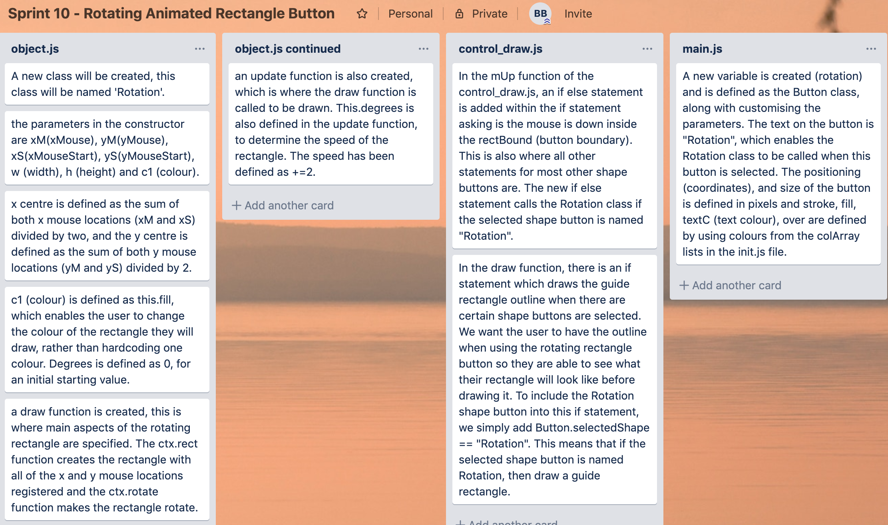
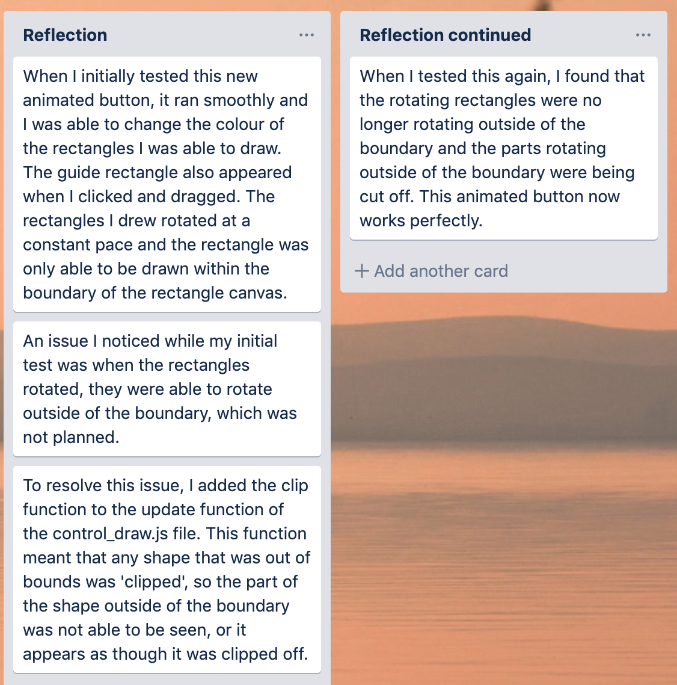

rotating animated rectangle button this is the tenth version of the application
Sprint 10
My aim for this sprint is to create a button which allows the user to draw a rectangle which rotates once it is drawn
My trello page:

My Reflection:

My video testing:
This video shows how my animated rotating rectangle button works, but the rectangles are rotating outside of the boundary.
This video shows the clip function working and clipping off any parts of the rotating rectangles which are out of the rectangle canvas boundary.